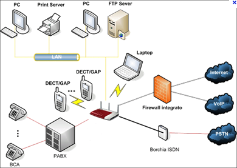

|  |
- La rete LAN (Local Area Network) è una rete locale composta da computer che risiedono
tutti nello stesso ambiente di lavoro. Sono situati, quindi, in un’area geografica circoscritta
(all’interno dello stesso edificio o edifici adiacenti). I computer, collegati fisicamente
tra loro, possono condividere file, programmi, periferiche, ecc.
- Le reti WAN (Wide Area Network) o reti geografiche, coprono lunghe distanze, arrivando
oltre i confini geografici di città e stati. Le connessioni possono avvenire tramite ponti radio,
reti pubbliche o addirittura stazioni satellitari per le telecomunicazioni.
- Tra le altre tipologie di reti troviamo: MAN (Metropolitan Area Network), per reti geografiche
riguardanti una zona metropolitana e Internet, interconnessione di reti locali e geografiche
in una rete globale.
|